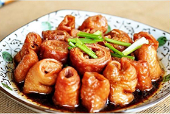
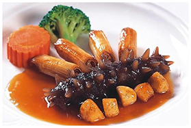
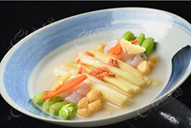
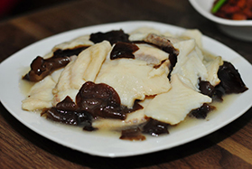

中国八大菜系之鲁菜

-

鲁菜九转大肠
猪大肠经煮、炸、烧等九道工序制成，酸甜苦辣咸五味交融，外酥内糯如道家炼丹，工艺繁复如「九炼金丹」 。济南传统名菜，肥而不腻，入口酥软。
-

葱烧海参
胶东刺参与章丘大葱同煨，高汤浓汁渗透参体，葱香醇厚，鲁菜高端宴席标杆 。2018年入选“山东十大经典名菜”，以“以浓攻浓”技法著称
-

糖醋鲤鱼
黄河鲤鱼裹糊油炸后浇糖醋汁，外酥里嫩，酸甜开胃，济南传统宴客主菜 。糖醋汁按1:2:3:4:5比例（料酒、酱油、糖、醋、水）调配
-
油爆双脆
猪肚尖与鸡胗急火爆炒，30秒内成菜，脆嫩爽口，火候精准如艺术 。鲁菜“爆法”代表作，刀工要求极高，食材需切十字花刀

-
四喜丸子
猪肉荸荠团炸后红煨，象征福禄寿禧，婚宴压轴硬菜 。相传源于唐代张九龄“四喜临门”典故，寓意圆满

-

油焖大虾
渤海大虾油焖至壳脆肉弹，虾脑脂膏融成红亮浓汁，咸甜焦香如琥珀 。鲁菜油焖技法代表，清明前渤海对虾为最佳食材
-

奶汤蒲菜
大明湖蒲菜与老母鸡汤共煨，汤色乳白如凝脂，鲜香清雅，济南第一汤菜 。选用香蒲嫩根，明清时期已成名菜，汤底需两次“清哨”去杂质
-

糟溜鱼片
鲻鱼片滑油后糟卤熘制，香糟酒提味，鱼片滑嫩鲜香 。香糟以绍兴黄酒、桂花卤泡制，京鲁两地均有传承 。